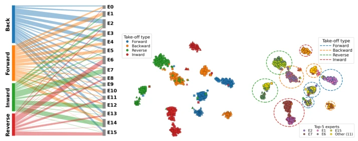

Fig. 1: FineX architecture. Frozen RGB, pose-heatmap, and skeletal-graph back- bones provide pre-cached features, which are projected to a shared space. Pairwise cross-attention contextualises each stream using the other two, after which a shared sparse MoE routes every refined stream representation to its top-k latent experts. The routed outputs are mean-pooled for classification.
Fig. 4: Per-class accuracy on Gym288 sorted by training frequency. Top: class-frequency histogram. Bottom: per-class accuracy of FineX vs. the three single- stream backbones. FineX gives the largest gains on rare classes.
其他图片Other Figures

Fig. 3: Expert routing on Diving48 at both coarse and fine-grained resolu- tions. (a) Sankey diagram summarising dominant expert selections by take-off type, with flow width indicating the number of routed tokens. (b–c) t-SNE visualisation of concatenated stream-level routing weights, with three fine-grained classes per take-off type (up to 150 clips each); the embedding is identical in both panels, differing only in colour/fill. (b) Colour encodes take-off type, and marker shape encodes fine-grained class. (c) Fill indicates the dominant expert (the five most frequently selected experts shown individually, all others grouped as Others); edge colour shows take-off type, and dashed outlines indicate the approximate cluster boundary for each take-off type.